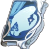
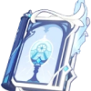
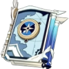
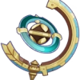

|  |
Sinfonia dos Indolentes |
42.4 |
510 |
Bonus CritDMG |
12.0% |
55.13% |
Ao entrar no campo de batalha, o personagem ganha uma música temática aleatória por 10s. Pode ser ativada uma vez a cada 30s. Recitativa: O ATQ é aumentado em 60-120%; Aria: Aumenta todos os Danos Elementais em 48-96%; Interlúdio: A Proficiência Elemental é aumentada em 240-480 |
|  |
Memórias de Sacrifício |
41.07 |
454.36 |
Bonus EM |
48.0 |
220.51 |
Ao causar dano contra um oponente com Habilidade Elemental, a habilidade possui 40-80% de chance de redefinir o tempo de Recarga desta habilidade. Este efeito pode ser ativado apenas uma vez a cada 30-16 segundos. |
|  |
Mappa Mare |
43.73 |
564.78 |
Bonus EM |
24.0 |
110.26 |
Ativar uma reação Elemental concede um adicional de 8-16% de Dano Elemental por 10s, podendo acumular até 2 vezes. |
|  |
Estrela Itinerante |
42.4 |
510 |
Bonus EM |
36 |
165.38 |
A cada 10s, gera os seguintes efeitos: aumenta o ATQ do personagem que está com essa arma equipada baseado em 24-48% da sua Proficiência Elemental. Os demais personagens próximos da equipe ganham 30% desse bônus. Esses efeitos duram 12s. É possível acumular esses efeitos equipando vários exemplares desta mesma arma. Esse efeito será desencadeado mesmo que o personagem não esteja ativo no campo de batalha. |